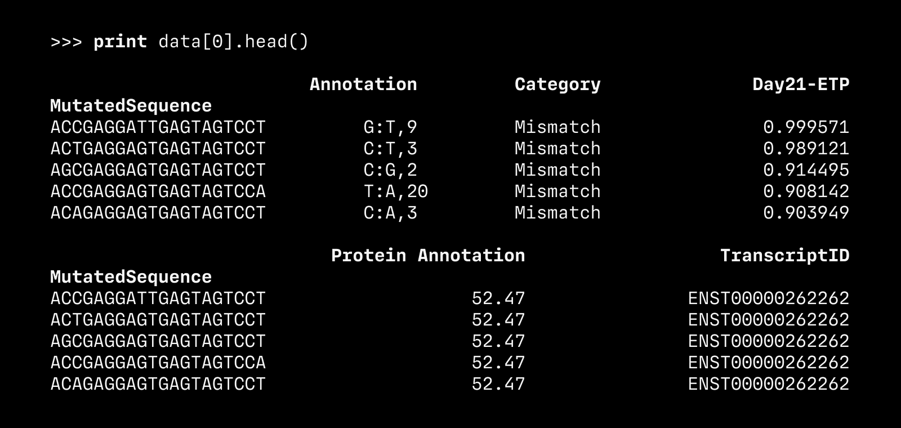

A monospace typeface designed for legibility (2021)
MD IO is a typeface designed for code, focused on single-character legibility rather than overall readability. The first version was released on Future Fonts in January 2021, and future versions will continue to be released as the design progresses.
Available for WIP licensing via Future Fonts.

Specimen · Example CLI output set in two weights of MD IO.